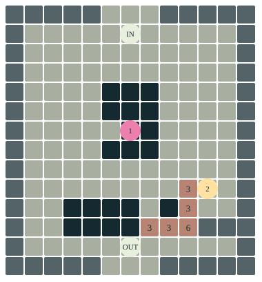

A cell with a past.
It is still there. Its neighbours have stopped counting it. What can happen in the interval before it disappears?
The noise filter gave us a useful organic gesture. The next capability is a stored state that can delay a new beginning. We keep the pleasure of the body while learning another way it can be made.
Actual Godot captures and 21 desktop checks are now available below. Headset and route traversal checks remain pending. The interactive web experiment is a separate smaller model.
Inside the endless museum
The current room, captured on 13 September. The first capture exposed a readout that obscured the work; its case is now narrower, its lettering larger, and its position shifted to the side. These views use the actual museum scene and retained structure-growth artifact.


21 desktop checks passed. The original editor stayed open; the capture used an isolated copy of the museum layout and saved hand. One full-volume update took 144 ms in the latest run; frame cost needs optimisation before headset acceptance. Physical route traversal and headset checks remain pending.
Present, active, visible
Try one generation before reading the explanation. Pink is active; green is fading. The white outline marks cell (7, 7, 7).
14 × 14 × 14 cells · empty outer boundary
The selected centre can be hidden by other cells. The witness reads its stored state, including when it is not drawn.
Web model: 14³ positions, independent seeded JavaScript initialization. The Godot study retains the original 50³ positions and Godot seed 23090. Both use 6–8 / 6–8 / 3 / Moore, synchronous updates and an empty boundary. The three diagnostic arrangements above are extra web exercises.
Let the finish betray a difference.
STEP once. Some cells can remain occupied after they cease to contribute to a neighbour's count. VIEW gives them a height gradient instead. Check the generation: changing the finish has not advanced the state.
Choose the occupied block. Twenty-seven positions hold activity, but only twenty-six cubes are drawn. The occupied centre still participates in the next generation. The renderer has left it out.
Being present and being counted have parted company.
A pause is another question.
At twenty generations, automatic advance holds. +20 extends the observation budget without resetting. Compare the changed-cell count before concluding that a still object reached a fixed point.
A fading cell with seven active neighbours gives a smaller test. Predict its next state. Then try the empty cell with the same neighbours. The surrounding count is identical; the stored past sends the two positions through different branches.
REPLAY returns to the selected beginning. Time spent looking can be repeated locally, even while the rest of the museum continues.

Keep the work. Give it room.
The complete old seven-by-ten relief remains inside a thirteen-by-fourteen enclosure. Both authored artifacts remain. The volume moves away from the spawn and is scaled to fit above the opening; a console stands to one side of its entry rim.
The rule, cell count and three-state mechanism stay. Its optional study starts held, makes replay repeatable and clears an inherited invisible boundary that otherwise alternated between generations. Other placements of the shared script keep their previous behaviour.
The room is back in the active museum sequence: Introduction → Elementary Rules → Game of Life. Its historical name stays, but its text now describes this three-dimensional specimen rather than a rule wall that was never here.
Read the book passage
A cell with a past
How would you recognise a cell that has stopped being active but has not yet disappeared?
The previous hall let three cells answer a question about the next row. Here the neighbourhood reaches behind what we can see. A small volume waits above the opening in the floor. Walk along its rim. Two marks that seemed to touch can separate as you move; another cell has been behind them all along.
Begin at the console. The structure is held at its starting generation. Pink means active. Press STEP once and look for green. A green cell is still occupied, still drawn where the surface allows it, but it has stopped contributing to its neighbours' active count. Follow it through another step. What does it leave available?
Each position consults a cube of three by three by three positions. Remove the position itself and twenty-six neighbours remain: through faces, along edges, across corners. The source gathers their activity with this test:
for offset in neighbor_offsets:
if current_state[idx + offset] == 1:
neighbors += 1
The comparison is to 1. A green neighbour holds 2. Being present and being counted have parted company.
The inscription 6-8/6-8/3/M names this installation's agreement. An active cell survives with six, seven or eight active neighbours. An empty cell becomes active with those same counts. Three states are available: empty, active, fading. M denotes the surrounding Moore neighbourhood, which this implementation fixes at twenty-six positions.
Now find a place that has turned green and imagine it surrounded by seven active neighbours. Will it become pink at the next step? Birth is tempting, but the code has already sent this cell down another branch. These are the lines for a state above one:
if state < rule_states - 1:
next_state[idx] = state + 1
else:
next_state[idx] = 0
Here rule_states is three, so state two goes to zero. It must first become empty. Only a later generation can consider its birth again. Disappearance takes time, and that interval changes where new activity is possible. We have acquired another means of shaping a body: a position can retain a past that temporarily prevents a beginning.
Every answer is written into a second array. The old volume supplies all the questions before the arrays exchange places. There is no privileged first cell whose new answer reaches its neighbours early. STEP gives this local agreement one generation; the rest of the museum keeps running.
Press VIEW. The structure takes on a gradient from dark to light with height. Nothing has advanced. The same cells can look like one continuous material now that their different states share a colour scale. Press VIEW again and recover the distinction. The finish has changed what we can readily recognise. Which reading did we take for the object itself?
The console also separates ACTIVE, FADING and DRAWN. The last number can be smaller than the first two added together. The renderer omits occupied cells surrounded on all six faces by occupied cells. Their state remains in the calculation. What the surface conceals can still help determine its next form. These visible cubes have no individual collision bodies; their appearance is not a promise of footholds.
Try RUN, then hold it. REPLAY returns to the same seeded beginning, so a second observation can follow a detail missed the first time. Twenty steps fit the initial observation budget. At that limit the machine holds; +20 permits another interval without reseeding. Read CHANGED beside the generation count. A stopped clock alone cannot tell us whether the configuration has stopped changing. Zero changed cells, after an update under these fixed conditions, gives stronger evidence: that whole state reproduced itself.
There is an edge to this world too. Its outer cells stay empty. They do not wrap around to the opposite face as the previous board did. Near that boundary, a cell cannot find the same company it might find in the interior. The body has a rule, a beginning, an edge and a chosen duration of observation. Its organic appearance does not tell us which of these has made a particular feature possible.
The dark orb remains beside the route as a further encounter. For now, carry the difference between an active cell, a lingering cell and a cell hidden by the drawing. The familiar wish to give something life has opened into more particular questions. What must remain? What must become available again? In the next hall, generations will themselves become a structure laid out in space. A past we have just replaced will become something we can approach.
Read the critical thread
Present, but not counted
The state-two cell occupies a position but contributes nothing to the active neighbour count. For one generation it also prevents that position from receiving the birth available to an empty cell. The work makes three conditions distinct: participating, lingering, becoming available again. These are consequences of a particular state machine, not laws about social life. Their specificity makes them available for thought without turning the simulation into a universal explanation.
The height finish folds active and fading states into a shared appearance. A second finish separates them. The display can therefore make continuity persuasive where the calculation preserves a difference. Its shell rendering makes another selection: an occupied interior can remain consequential without being drawn. Visibility and causal participation are separate operations in this artifact.
This extends the noise sequence's question about the useful organic filter. A blob can give pleasure, desire or a queer suggestion of becoming. Learning the next mechanism lets us ask which relations could sustain another body. Here a stored state delays reuse of a position. The result need not look less like a blob to give us a new capability. Its value is in the particular experiment it makes possible, rather than an assumed hierarchy of more authentic life.
The edge and the clock also belong to the argument. This study specifies an empty outer shell, a repeatable seed and a twenty-step observation budget that can be extended. The inherited source had a hidden alternating boundary because only the interior was updated. Correcting that boundary here makes the stated experiment reproducible; it does not erase the old behaviour from the archive or pretend every other placement has been repaired. A limit in the schedule can produce stillness before the rule produces a fixed point. We can inspect the changed-state count instead of asking stillness to prove equilibrium.
The source gives us handles for further work: alter the fading interval, admit another counted state, change the boundary, draw the hidden interior. Each would revise a specific relation. The museum keeps those possibilities open while giving this first visit a path narrow enough to follow.
Implementation and remaining checks
A three-dimensional Generations study
Primary source: algorithms/cellularautomata/cellular_automata_3d/CellularAutomata3D_Flexible.gd, with StructureGrowth.tscn. This historical map ID does not mean that this room enumerates the 256 elementary binary one-dimensional rules. That elementary mechanism is introduced on CA_Introduction's rule explorer. This specimen extends the comparison to a volume.
The retained scene has a 50×50×50 grid, 0.15 m logical cell spacing, a random central seven-cubed seed plus a 10% soup, and rule 6-8/6-8/3/M. Only state 1 contributes to the 26-neighbour Moore count. Empty state 0 is born at counts 6–8. Active state 1 survives at counts 6–8 and otherwise becomes 2. State 2 becomes 0 regardless of its neighbours. All interior outputs go into the second buffer before swapping. The rule parser stores a neighbourhood letter, but this source always constructs 26 offsets; another letter does not implement another stencil.
The optional study:states placement adds structure_study.gd after the base has initialized. Its idempotent mount works through pre-ready config metadata and deferred apply_grid_config. Other scenes and placements retain their defaults and the separate mould DNA rule/wake bands. The structure scene and its original baked geometry remain unchanged.
The study duplicates its MultiMesh resource, retains the full cell count and rule, and scales only the rendered volume by 0.32. It is centred over the retained opening, with a roughly 2.35 m occupied extent and base just above the room's floor plane. The console remains metre-sized at the entrance rim, at approximately 1.05 m before tilt. Runtime review moved it 1.65 m to the side of the artifact anchor, narrowed its case to 1.15 m and enlarged its lettering so it no longer obscures the volume. Its five RackTemplates pointer controls are STEP, RUN, REPLAY, VIEW and +20. It disables the standalone camera/light for this instance. No per-cell collision or physical growth is claimed.
The study owns the clock: initially held, automatic updates at most once per second, one generation per STEP, held at the current budget (initially 20). +20 extends that budget without a state update and leaves the study held. REPLAY resets generation, budget, fractional clocks and both state buffers, using Godot RNG seed 23090. VIEW changes only colouring. State colours use the scene's pink and green; the alternate height gradient uses the existing gradient. Counts distinguish active, fading, drawn and changed positions. CHANGED compares current_state with next_state after the swap, when next_state holds the previous generation. A zero comparison after a step establishes a fixed point for this deterministic rule and boundary; it does not classify cycles or all possible seeds.
Boundary repair is scoped to this optional study. The legacy initializer seeds the outer shell, while the update and rendering skip it. Without intervention those hidden seeds alternate with the initially empty second buffer. Replay clears boundary cells in both buffers. Subsequent interior-only steps preserve the empty boundary. Other shared-script uses have not been silently changed; their boundary semantics remain a separate review item.
Rendering includes state > 0 only if at least one of its six face neighbours is empty. This shell selection is different from the 26-neighbour calculation. Omitting a cell from the MultiMesh does not remove it from the state arrays. Height colours can conceal active/fading distinctions while leaving both state and generation unchanged.
The complete old 7×10 structure is retained at offset (3,2) inside a 13×14 walled floor with three-cell entry and exit gaps. Its pits and raised cells remain. max_height=6 and museum.wall_height=7 preserve the original raised cells as tiers rather than flattening them into the converter's ordinary wall token. An open roof clears the tallest tier. The spawn and next portal now occupy the added level floor. Both authored artifacts remain, with structure_growth primary and dark_sphere decoration. Map declaration and both museum plans insert this hall between CA_Introduction and CA_GameOfLife; other placements remain unchanged.
The independent web exercise uses 14-cubed cells and a fixed JavaScript seed, with the same transition and boundary semantics. It is a teaching model, not a matching Godot seed, screenshot or performance measurement. Source, data, grammar and browser checks are recorded with the review. A rendered Godot review now passes 21 desktop checks, including the actual solver, state replay, boundary buffers, view changes, shell rendering, budget controls, ownership and all five pointer controls. Entrance, side and console photographs are available. The existing editor was left open; the earlier all-process guard was too broad and now distinguishes an editor from another game/capture. A full 125,000-cell update took 144 ms in the latest run. That cost needs optimisation; a one-second update interval does not prevent a long frame. Physical route traversal and headset acceptance remain pending.